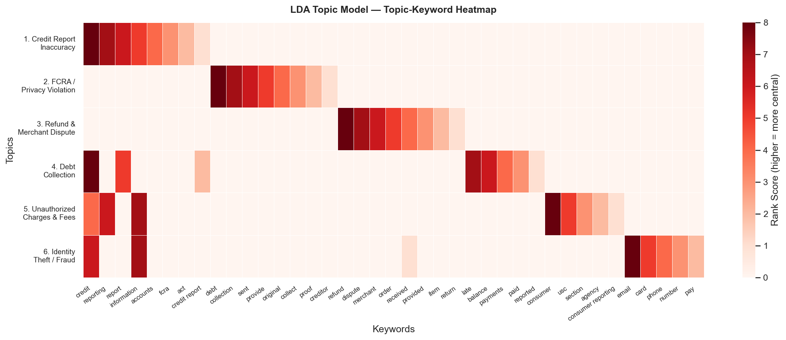

LDA Topic Modeling
Overview
This page applies Latent Dirichlet Allocation (LDA) topic modeling to the corpus of 4,791 consumer complaint narratives. Topic modeling surfaces latent themes without requiring pre-specified categories, providing an unsupervised check on the patterns identified in the exploratory and TF-IDF analyses.
Method
LDA models each document as a mixture of topics and each topic as a distribution over words. Six topics were estimated after evaluating coherence scores for \(k \in \{4, 5, 6, 7, 8\}\). Preprocessing mirrored the TF-IDF pipeline (lowercase, stopword removal, minimum document frequency of 5). The model was fit with scikit-learn using default hyperparameters.
Six Latent Topics
The six topics and their top keywords:
| # | Topic | Representative Keywords |
|---|---|---|
| 1 | Credit Report Inaccuracy | credit, reporting, report, information, accounts |
| 2 | FCRA / Privacy Violation | fcra, act, credit report, data, privacy |
| 3 | Refund and Merchant Dispute | order, refund, merchant, purchase, received |
| 4 | Debt Collection | debt, collect, collector, creditor, owe |
| 5 | Unauthorized Charges and Fees | late, fees, balance, charges, consumer |
| 6 | Identity Theft and Fraud | fraud, theft, unauthorized, identity, account |

Interpretation
Two Dominant Topics
The two largest topics by average weight are Credit Report Inaccuracy (Topic 1) and FCRA / Privacy Violation (Topic 2). This confirms at the topic-model level the pattern identified through both the EDA and the TF-IDF analysis: a plurality of BNPL consumer harm manifests as credit reporting errors that the current framework is not designed to resolve.
Identity Theft as a Distinct Topic
The presence of a distinct identity theft topic (Topic 6) is consistent with the CFPB’s finding that BNPL’s soft-pull underwriting model creates heightened exposure to account opening fraud [1]. Because BNPL providers typically do not perform hard credit checks and offer near-instant approval, fraudulent accounts can be opened in a consumer’s name with minimal friction.
Refund and Merchant Disputes
Topic 3 is the territory where companies actually do sometimes provide relief (as shown in the TF-IDF resolved/unresolved comparison). When the consumer’s problem is a failed delivery, a defective product, or a billing error on a single transaction, Affirm and Klarna can sometimes resolve the issue internally. The problem is that this is a small share of the complaint corpus.
Cross-Validation of Findings
The three analytical methods — EDA, TF-IDF, and LDA — converge on the same core finding:
| Method | Dominant Finding |
|---|---|
| EDA | 52% of complaints relate to credit reporting |
| TF-IDF | Unresolved complaints dominated by “credit,” “report” |
| LDA | Two largest topics are credit reporting + FCRA |
This convergence strengthens the conclusion that the BNPL regulatory gap produces a specific, identifiable, and quantifiable form of consumer harm: systematic credit reporting errors that the current framework provides no mechanism to correct.